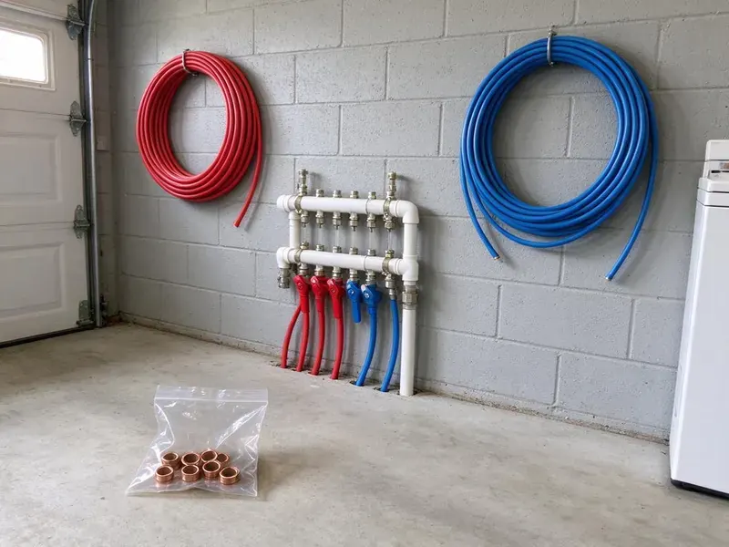

Tankless Water Heater Installation in Kirkland, WA
For dependable tankless water heater installation in Kirkland, WA, trust FHN Plumbing. Enjoy a space-saving design and on-demand hot water for your household.
- Fast, Efficient Installation
- Upfront Pricing
- Descaling Valves Installed
- Licensed & Insured

Ready for Endless Hot Water in Kirkland, WA?
Call now for a flat-rate tankless installation quote that includes gas, venting and water connections.
Tankless Water Heater Installation in Kirkland, WA Sized for Your Home
FHN Plumbing knows that hard water is the biggest threat to tankless units, since scale builds up inside the heat exchanger. Soft water can be mildly corrosive to copper over time, which sometimes shows up as pinhole leaks in older supply lines. We install service valves for easy flushing and recommend a scale inhibitor or softener to protect your warranty. You get efficient, endless hot water that keeps performing.
Our expertise includes:
- Installation of gas and electric tankless units.
- Code-compliant electrical and water line hookups.
- Careful sizing and venting for top performance.

Additional Plumbing Installation Services in Kirkland, WA
We install water heaters, pumps, lines, and fixtures across Kirkland, WA with careful, permitted work that passes inspection the first time.


Customers
Why Choose FHN Plumbing for Tankless Water Heater Installation in Kirkland, WA?
Our commitment to quality service and customer satisfaction sets us apart. We provide clear pricing and reliable workmanship for every tankless water heater project.
- Longer Lifespan, Tankless water heaters usually last longer than conventional models, offering a better long-term investment.
- Space Saving, These compact units free up useful floor space, often installed on a wall or in a small utility closet.
- Accurate Sizing, We match the unit's flow rate to your fixtures and incoming water temperatures.
Citywide Coverage
We install tankless water heaters in homes throughout Kirkland, mounting them in garages, utility closets and on exterior walls. Exterior installs save indoor space and simplify venting in many homes.
Experienced Team
Our team of licensed plumbers has thorough training and experience with tankless water heater installation. They are familiar with many brands and models, ensuring a precise and efficient setup for your home.
Safety-First Approach
We pressure test new gas piping, check gas pressure under full load and confirm every joint is tight. Permits and inspections are handled for each tankless installation.
Trusted Certified Kirkland Plumbing Services Professionals
At FHN Plumbing, we take pride in providing certified plumbing services throughout Kirkland, WA. Backed by recognized industry credentials, our experienced plumbers combine technical skill with genuine customer care. Whether it is repair, installation, or maintenance, we follow strict safety and quality standards to deliver long-lasting results you can trust.
Call Us Now PHCC Plumbing Contractor Recognition
PHCC Plumbing Contractor Recognition Better Business Bureau (BBB) Accreditation
Better Business Bureau (BBB) Accreditation Angi Certified Pro
Angi Certified Pro ISO 9001 Quality Management Certification
ISO 9001 Quality Management CertificationDependable Tankless Water Heater Installation Services in Kirkland, WA
Upgrading from Tank to Tankless in Kirkland, WA
Making the switch from a traditional tank water heater to a tankless system involves more than simply swapping units. It often requires changes to gas lines, electrical wiring and venting. FHN Plumbing manages all aspects of this conversion, making sure all upgrades meet current codes and your new tankless unit performs optimally, giving you a modern hot water solution in Kirkland, WA.

Propane Tankless Water Heater Installation in Kirkland
Many homes outside natural gas service areas rely on propane. FHN Plumbing is experienced in installing propane tankless water heaters, which require specific gas line sizing, regulator adjustments and venting. We make sure your propane system is installed correctly for maximum efficiency and safety, providing reliable hot water for your Kirkland residence.
Tankless Water Heater Relocation in Kirkland
Sometimes the ideal spot for a tankless water heater is not where your old tank was located. For homeowners in Kirkland looking to free up space or improve access, FHN Plumbing offers professional tankless water heater relocation. This can involve rerouting gas or water lines and possibly electrical work, all handled with precision and to local codes by our experienced team.
Tank to Tankless Conversions in Kirkland
Converting from a tank requires more than swapping units. A 40 gallon tank heater uses roughly 40,000 BTU, while a whole-home tankless unit may need up to 199,000 BTU, so the gas line usually needs to be upsized. Venting changes from a metal flue to PVC or stainless, and the unit moves to a wall location. We remove and dispose of your old tank and patch the old flue penetration.
Residential Tankless System Upgrades in Kirkland
Upgrading your traditional hot water tank to a tankless system in Kirkland can noticeably improve efficiency and comfort. We assess your home's hot water demands, existing plumbing and utility connections to recommend the best tankless model for your household size and usage patterns. Our team manages the entire conversion, including the safe removal and disposal of your old water heater, minimizing disruption to your daily routine.
Residential Tankless Water Heater Installation in Kirkland
FHN Plumbing focuses on installing tankless water heaters for residential properties. We assess your home's hot water demands, family size and existing utility connections to recommend the most suitable unit, so you get the right capacity for your needs. Our installations are designed to be energy efficient, providing endless hot water while potentially lowering your monthly utility bills in Kirkland.
Recirculation Systems for Tankless Heaters in Kirkland
Tankless heaters can take a few extra seconds to deliver hot water to distant fixtures. A recirculation pump or dedicated return line keeps hot water close to faucets, reducing wait time and water waste. Some units have built-in pumps with smart scheduling. We design the system to fit your plumbing layout and usage patterns.

Rinnai Tankless Water Heater Installation in Kirkland, WA
Rinnai tankless water heaters are a top choice for their reliability and long lifespan, making them a smart investment for homeowners across Kirkland, WA. Our plumbers are factory-trained on Rinnai systems, delivering a clean installation that follows all manufacturer specifications. We make sure gas line sizing, venting and water connections are correct so your Rinnai unit provides endless hot water reliably for years.
Nearby Tankless Water Heater Installation in Kirkland, WA
Our local presence means faster response times and a commitment to serving our neighbors in Kirkland. You can trust FHN Plumbing to provide timely, professional and courteous service for all your tankless water heater needs, right in your neighborhood.
Our local presence means faster response times and a team that understands the challenges and opportunities for tankless systems in Kirkland. We are focused on bringing modern, efficient hot water to every home in our community.
FHN Plumbing at a Glance
- Licensed and insured plumbers serving Kirkland, WA
- 24/7 emergency service with same-day scheduling
- Clear written estimates, no hidden fees
- 4.9-star rated by 382+ Washington customers
Kirkland Map
Kirkland Information
- Population
- 91,194
- Area codes
- 425/206/564
- Service area
- Kirkland and communities within 40 miles
- Nearby
- Redmond, Bothell, Bellevue, Shoreline
Incoming water temperature shapes how a tankless unit performs in Kirkland, WA, and hard water makes careful installation with descaling valves essential for a long service life.
Expert Services
Trust our professionals for reliable FHN Plumbing solutions in Kirkland, WA.
Our Specialized Plumbing Services in Kirkland, WA
At FHN Plumbing, we provide a complete range of plumbing services across Kirkland, WA. From leak detection to full system installations, our team ensures fast, precise, and affordable service for both residential and commercial properties. Explore our core services below:


How Our Tankless Installation Process Works in Kirkland, WA
We follow a clear process so your tankless installation is sized right, installed safely and ready to go.
Request a Quote
Call (425) 491-3131 to schedule a site visit. We assess your fixtures, gas supply and venting options, then give you a written quote.
Install and Upgrade
We remove your old heater, upsize gas lines if needed and mount the new unit. Venting, water connections and isolation valves are installed to manufacturer specs.
Test and Train
We fire the unit, check gas pressure and test hot water at several fixtures. Then we show you how to flush the system and register your warranty.
Frequently Asked Questions About Tankless Water Heater Installation in Kirkland
Most gas tankless installations cost $3,000 to $6,500 including the unit, labor, venting and typical gas line upgrades. Electric units can be less, though panel upgrades can add $1,000 to $3,000.
Signs you might need a new water heater, tankless or otherwise, include a lack of hot water, rust-colored water, strange noises from the unit or frequent leaks. For tankless systems in particular, frequent error codes or a significant drop in hot water flow could point to a need for service or replacement.
Size depends on how many fixtures run at once and your incoming water temperature. Many homes need a unit rated around 7 to 10 gallons per minute.
Sizing a tankless water heater depends on your household's peak hot water demand, measured in gallons per minute (GPM), and the temperature rise needed. Our plumbers will count the hot water fixtures in your home and review your usage patterns to recommend the appropriate GPM and BTU rating for your needs in Kirkland.
In Washington, plumbing and often gas or electrical permits are usually required for tankless water heater installation. FHN Plumbing handles all necessary permit applications and makes sure your installation passes all required inspections by local authorities.
Tankless water heaters offer several key benefits: endless hot water on demand, significant energy savings from heating water only when needed, a longer lifespan (often 20+ years) and a compact, space-saving design. They also reduce the risk of tank leaks and the water damage that comes with them.
Absolutely. Tankless water heaters are an excellent choice for Washington homes. Their energy efficiency can help manage utility costs, especially during peak demand. The compact size is ideal for the smaller utility closets common in many houses, and the endless hot water suits busy families throughout the year, whatever the climate.
Yes, installing a new tankless water heater or replacing an existing one in Kirkland usually requires a plumbing permit. This ensures the installation meets local building and safety codes. FHN Plumbing handles all required permitting paperwork for you.
What People Are Saying About Our Plumbing Experts?

Laura S.
I scheduled a water heater replacement, and the team made the process smooth and affordable. The new unit works perfectly, and they cleaned up after completing the job.
Water Heater Replacement · Redmond, WA
Mark T.
When our office needed drain cleaning, FHN Plumbing provided quick, reliable service. The plumber arrived on time and made sure every drain flowed perfectly before leaving. Very satisfied.
Drain Cleaning · Kirkland, WASofia M.
Two new toilets installed in one visit, no mess left behind, and the tech even adjusted a faucet he noticed was dripping. Fair pricing and really friendly.
Toilet Installation · Bothell, WA
Daniel K.
A pipe burst at 11 pm and they actually answered. The plumber showed up within the hour, shut everything down, and had us back to normal the next morning. Could not ask for more.
Emergency Plumbing · Redmond, WA
Patricia H.
We had a slab leak that two other companies could not find. FHN Plumbing located it in under an hour, explained our options, and the price matched the quote to the dollar.
Slab Leak Repair · Seattle, WA
Emily R.
I called FHN Plumbing for plumbing repair, and the technician was fast, polite, and thorough. They explained the problem clearly and fixed it the same day. I will definitely hire them again. Highly recommended!
Plumbing Repair · Bellevue, WA